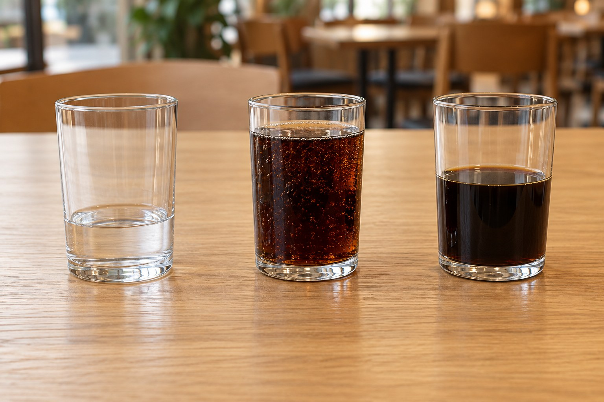

검출기가 컵마다 상자를 그립니다. 검출 모델은 아직 미정.
Architecture, explained · 2026.10.16
컵을 보고,
물어보고,
확인하고 움직인다.
여러 컵이 놓인 테이블에서 부족한 음료를 찾고, 손님의 요청을 확인한 뒤 리필을 돕는 시스템. 카메라부터 LED까지, 하나의 장면으로 따라가 보세요.

01 / THE BIG PICTURE
각자 하는 일은 다릅니다.
잘라낸 컵 이미지로 음료 종류와 잔량을 판단합니다.
부족한 잔량·신뢰도를 검사하고 대상 컵을 선택합니다.
손님의 말을 음료·분량·의도로 구조화합니다.
고객 확인 뒤 LED와 mock 복귀 시퀀스를 실행합니다.
전체 흐름의 책임자는 Controller입니다. 모델은 판단에 필요한 결과를 반환하고, Controller가 검증·확인·취소와 MCU 명령을 관리합니다.
02 / FOLLOW ONE REQUEST
사진 한 장이 리필 요청이 되기까지
상황과 단계를 눌러 보세요. 모든 발화·JSON·잔량·점수는 구조를 설명하기 위한 예시입니다.
이 페이지는 오프라인 설명 문서입니다. 실제 모델·카메라·마이크·스피커·하드웨어를 호출하지 않습니다. 제품 UI와 음성은 영어, 팀 설명은 한국어로 구성합니다.
03 / WHERE DOES IT RUN?
개발은 각자, 통합은 보드에서.
각자 앱은 로컬에서 실행하고, Qwen만 공용 Mac mini를 호출합니다.
영상 · 별도 스트림
카메라는 한 모듈만 엽니다. 최신 프레임을 UI 영상과 Vision 입력에 나눠 줍니다. 영상과 추론 주기는 분리합니다. MJPEG는 초기 후보입니다.
상태 · WebSocket / 입력 · HTTP
Controller가 bbox·요청 카드·상태·음성 이벤트를 UI로 보냅니다. UI는 고객 입력·확인·취소를 전달합니다. 세부 API는 구현 전 확정합니다.
물리 출력 · Arduino Bridge
HardwareIO는 Controller 내부 모듈입니다. 개발 중에는 로그를 출력하고, 보드에서는 Bridge로 MCU를 호출합니다.
서버는 FastAPI + Uvicorn, 모델 실행은 ExecuTorch. 보드는 Docker 없이 Ubuntu에서 Python 가상환경과 여러 프로세스로 직접 실행합니다. 각자 서버를 여러 터미널에서 수동으로 띄우지 않도록 공통 실행 도구를 만들 예정입니다.
서버 안에서는 무슨 일이 일어날까?
HTTP 요청 → FastAPI 입력 검증 → 전처리·프롬프트 → ModelBackend → ExecuTorch → 후처리 → JSON 응답.
API 코드는 로컬에서 작성하고 모델만 mock으로 대체할 수 있습니다. 실제 보드의 .pte·runner·QNN 연결은 보드에서 검증합니다. Mac mini의 기존 MLX 서버는 그대로 사용합니다.
서버가 켜져 있어도 매 요청마다 일회성 runner를 실행하면 모델 로딩이 반복될 수 있습니다. 모델 재사용 방법은 보드에서 확인합니다. 초기 모델 서버는 worker 1개로 시작하고 추론 작업을 분리해 화면·취소 처리를 막지 않게 합니다.
실행 명령은 한 번으로 — 구현 예정
python scripts/dev.py
기본: 로컬 Controller/UI만 실행. Vision fixture와 원격 Mac Qwen 사용. 필요할 때 로컬 Vision 서버 추가. Ctrl+C로 함께 종료합니다.
scripts/start-board.sh / stop-board.sh
보드: Controller·Vision·Qwen 시작·종료와 프로세스별 로그를 관리합니다. Git으로 변경을 반영하고 재시작합니다.
이 명령 파일들은 아직 없습니다. 환경 로더·서버·실행 도구는 구현할 계획입니다. MCU 펌웨어와 arduino-router는 별도로 관리합니다.
주소와 환경 설정 자세히 보기
보드 공통 설정은 .env.board, 개인 개발 예시는 .env.example입니다. Controller는 8080, Qwen은 8000, Vision은 8001을 사용합니다. 보드의 127.0.0.1은 보드 자신을 뜻합니다. 노트북 브라우저는 보드의 Tailscale 주소로 접속합니다. *_HOST/PORT는 서버 bind 설정이고 *_BASE_URL은 Controller의 호출 주소입니다. URL을 설정했다고 해당 서버를 자동으로 로컬 실행하지 않습니다. 앱의 환경 로더와 서버 실행 코드는 아직 구현 전입니다.
04 / FOUR PEOPLE, ONE BOARD
보드를 기다리지 않고 개발하려면
UI·Controller 담당자는 인식 결과 fixture로 진행하고, Vision 담당자는 실제 검출·crop·DINO를 개발합니다. Vision API가 준비되면 담당자 노트북이나 Mac mini에서 공유할 수 있습니다. 코드는 로컬에서 작성하고 Git으로 보드에 반영해 실기를 검증합니다. 실제 담당자는 팀에서 정합니다.
장면 → 컵별 판단
검출·crop·DINO를 담당합니다. 같은 사진으로 개발하고 보드 추론을 일찍 확인합니다.
image → objects[]발화 → 요청 초안
Mac Qwen API로 영어 프롬프트·수정·취소를 개발합니다. STT는 별도 선택입니다.
utterance → request draft판단 → 확인 → 동작
상태 머신·검증·Bridge와 보드 배포를 담당합니다. 보드 실행 창구를 한 명으로 모읍니다.
validated request → MCU모든 과정을 보이게
fixture 데이터로 영상·bbox·요청 카드·버튼을 만듭니다. 화면과 음성 재생은 브라우저가 맡습니다.
events → screen + audio가장 먼저 연결할 한 줄: 가짜 인식 결과 → Mac Qwen → 요청 카드 → 확인 버튼 → 실제 LED. 그다음 실제 Vision과 보드 Qwen으로 하나씩 교체합니다.
세 ID를 끝까지 연결합니다.
scene_id— 어떤 장면을 분석했는가?object_id— 그 장면의 어느 컵인가?request_id— 고객이 어떤 요청을 확인했는가?- 요청 카드에는 분석 당시 컵 이미지를 고정합니다. bbox 순번을 영구 ID로 가정하지 않습니다.
확정한 것 / 남은 것
- 확정: DINOv2·Qwen, ROS 없는 Controller, 명시적 고객 확인, 실제 주행 대신 mock.
- 미정: 검출 모델·잔량 라벨·분류 후처리·STT·최종 API.
- 검증 필요: 보드 모델 출력·상주 실행·자원 사용량·Bridge 통합.
- 이 그림은 목표 구조입니다. 실제 구현·실측 기록은 상세 문서와 평가 자료를 참고하세요.